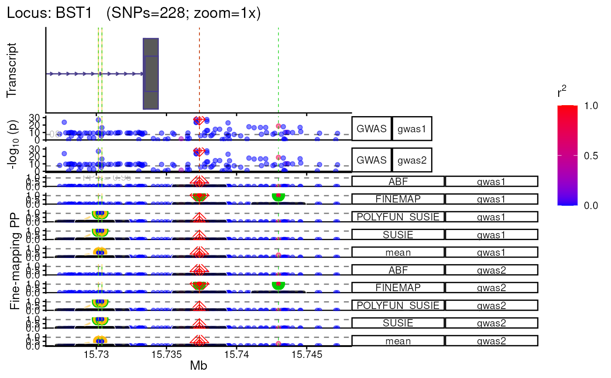

Plot multi-GWAS/QTL or multi-ancestry fine-mapping results
Source:R/plot_locus_multi.R
plot_locus_multi.RdPlot multi-GWAS/QTL or multi-ancestry(i.e. trans-ethnic) fine-mapping results generated by tools like PAINTOR.
Usage
plot_locus_multi(
dat_ls,
LD_ls,
locus_dir,
conditions = names(dat_ls),
show_plot = TRUE,
verbose = TRUE,
...
)Arguments
- dat_ls
A named list of data.tables generated by
echolocatoR::finemap_loci.- LD_ls
A named list of link disequilibrium (LD) matrices (one per item in
dat_ls).- locus_dir
Storage directory to use.
- conditions
Conditions to group
dat_lsby. The length ofconditionsmust equal the number of items indat_ls.- show_plot
Print plot to screen.
- verbose
Print messages.
- ...
Arguments passed on to
plot_locusdataset_typeDataset type (e.g. "GWAS" or "eQTL").
color_r2Whether to color data points (SNPs) by how strongly they correlate with the lead SNP (i.g. LD measured in terms of r2).
finemap_methodsFine-mapping methods to plot tracks for, where the y-axis show the Posterior Probabilities (PP) of each SNP being causal.
track_orderThe order in which tracks should appear (from top to bottom).
track_heightsThe height of each track (from top to bottom).
plot_full_windowInclude a track with a Manhattan plot of the full GWAS/eQTL locus (not just the zoomed-in portion).
dot_summaryInclude a dot-summary plot that highlights the Lead, Credible Set, and Consensus SNPs.
qtl_suffixesIf columns with QTL data is included in
dat, you can indicate which columns those are with one or more string suffixes (e.g.qtl_suffixes=c(".eQTL1",".eQTL2")to use the columns "P.QTL1", "Effect.QTL1", "P.QTL2", "Effect.QTL2").mean.PPInclude a track showing mean Posterior Probabilities (PP) averaged across all fine-mapping methods.
sig_cutoffFilters out SNPs to plot based on an (uncorrected) p-value significance cutoff.
gene_trackInclude a track showing gene bodies.
max_transcriptsMaximum number of transcripts per gene.
tx_biotypesTranscript biotypes to include in the gene model track. By default (
NULL), all transcript biotypes will be included. See get_tx_biotypes for a full list of all available biotypespoint_sizeSize of each data point.
point_alphaOpacity of each data point.
snp_group_linesInclude vertical lines to help highlight SNPs belonging to one or more of the following groups: Lead, Credible Set, Consensus.
labels_subsetInclude colored shapes and RSID labels to help highlight SNPs belonging to one or more of the following groups: Lead, Credible Set, Consensus.
xtextInclude x-axis title and text for each track (not just the lower-most one).
show_legend_genesShow the legend for the
gene_track.zoom_exceptions_strNames of tracks to exclude when zooming.
xgr_libnamesPassed to XGR_plot. Which XGR annotations to check overlap with. For full list of libraries see here (XGR on CRAN). Passed to the
RData.customisedargument inXGR::xRDataLoader. Examples:"ENCODE_TFBS_ClusteredV3_CellTypes""ENCODE_DNaseI_ClusteredV3_CellTypes""Broad_Histone"
xgr_n_topPassed to XGR_plot. Number of top annotations to be plotted (passed to XGR_filter_sources and then XGR_filter_assays).
nott_epigenomeInclude tracks showing brain cell-type-specific epigenomic data from Nott et al. (2019) (doi:10.1126/science.aay0793 ).
nott_regulatory_rectsInclude track generated by NOTT2019_epigenomic_histograms.
nott_show_placseqInclude track generated by NOTT2019_plac_seq_plot.
nott_binwidthWhen including Nott et al. (2019) epigenomic data in the track plots, adjust the bin width of the histograms.
nott_bigwig_dirInstead of pulling Nott et al. (2019) epigenomic data from the UCSC Genome Browser, use a set of local bigwig files.
roadmapFind and plot annotations from Roadmap.
roadmap_n_topPassed to ROADMAP_plot. Number of top annotations to be plotted (passed to ROADMAP_query).
roadmap_queryOnly plot annotations from Roadmap whose metadata contains a string or any items from a list of strings (e.g.
"brain"orc("brain","liver","monocytes")).credset_threshThe minimum fine-mapped posterior probability for a SNP to be considered part of a Credible Set. For example,
credset_thresh=.95means that all Credible Set SNPs will be 95% Credible Set SNPs.facet_formulaFormula to facet plots by. See facet_grid for details.
save_plotSave plot as RDS file.
plot_formatFormat to save plot as when saving with ggsave.
save_RDSSave the tracks as an RDS file (Warning: These plots take up a lot disk space).
return_listReturn a named list with each track as a separate plot (default:
FALSE). IfTRUE, will return a merged plot using wrap_plots.conda_envConda environment to use.
nThreadNumber of threads to parallelise across (when applicable).
LD_referenceLD reference to use:
- 1KGphase1
1000 Genomes Project Phase 1 (genome build: hg19).
- 1KGphase3
1000 Genomes Project Phase 3 (genome build: hg19).
- UKB
Pre-computed LD from a British European-decent subset of UK Biobank. Genome build : hg19
- <vcf_path>
User-supplied path to a custom VCF file to compute LD matrix from.
Accepted formats: .vcf / .vcf.gz / .vcf.bgz
Genome build : defined by user withtarget_genome.- <matrix_path>
User-supplied path to a pre-computed LD matrix. Accepted formats: .rds / .rda / .csv / .tsv / .txt
Genome build : defined by user withtarget_genome.
zoomZoom into the center of the locus when plotting (without editing the fine-mapping results file). You can provide either:
The size of your plot window in terms of basepairs (e.g.
zoom=50000for a 50kb window).How much you want to zoom in (e.g.
zoom="1x"for the full locus,zoom="2x"for 2x zoom into the center of the locus, etc.).
You can pass a list of window sizes (e.g.
c(50000,100000,500000)) to automatically generate multiple views of each locus. This can even be a mix of different style inputs: e.g.c("1x","4.5x",25000).genomic_unitsWhich genomic units to return window limits in.
density_adjustPassed to
adjustargument in geom_density.strip.text.y.angleAngle of the y-axis facet labels.
dpidpi to use for raster graphics
heightheight (defaults to the height of current plotting window)
widthwidth (defaults to the width of current plotting window)
datData to query transcripts with.
LD_matrixLD matrix.
consensus_threshThe minimum number of fine-mapping tools in which a SNP is in the Credible Set in order to be included in the "Consensus_SNP" column.
Examples
locus_dir <- file.path(tempdir(),echodata::locus_dir)
#### Make dat_ls ####
dat <- echodata::filter_snps(echodata::BST1, bp_distance = 10000)
#> FILTER:: Filtering by SNP features.
#> + FILTER:: Post-filtered data: 114 x 26
dat_ls <- list(gwas1=dat, gwas2=dat)
#### Make LD_ls ####
LD_matrix <- echodata::BST1_LD_matrix
LD_ls <- list(ancestry1=LD_matrix, ancestry2=LD_matrix)
#### Make plot ####
plot_list <- plot_locus_multi(dat_ls = dat_ls,
LD_ls = LD_ls,
locus_dir = locus_dir)
#> LD_matrix detected. Coloring SNPs by LD with lead SNP.
#> Filling r/r2 NAs with 0
#> LD_matrix detected. Coloring SNPs by LD with lead SNP.
#> Filling r/r2 NAs with 0
#> +-------- Locus Plot: BST1 --------+
#> + support_thresh = 2
#> + Calculating mean Posterior Probability (mean.PP)...
#> + 4 fine-mapping methods used.
#> + 8 Credible Set SNPs identified.
#> + 4 Consensus SNPs identified.
#> + Filling NAs in CS cols with 0.
#> + Filling NAs in PP cols with 0.
#> ++ echoplot:: GWAS full window track
#> ++ echoplot:: GWAS track
#> ++ echoplot:: Merged fine-mapping track
#> Melting PP and CS from 5 fine-mapping methods.
#> + echoplot:: Constructing SNP labels.
#> Data is already melted. Skipping.
#> Adding SNP group labels to locus plot.
#> ++ echoplot:: Adding Gene model track.
#> Converting dat to GRanges object.
#> max_transcripts= 1 .
#> 1 transcripts from 1 genes returned.
#> Fetching data...
#> OK
#> Parsing exons...
#> OK
#> Defining introns...
#> OK
#> Defining UTRs...
#> OK
#> Defining CDS...
#> OK
#> aggregating...
#> Done
#> Constructing graphics...
#> + Adding vertical lines to highlight SNP groups.
#> +>+>+>+>+ zoom = 1x +<+<+<+<+
#> + echoplot:: Get window suffix...
#> + echoplot:: Removing GWAS full window track @ zoom=1x
#> + Removing subplot margins...
#> + Reordering tracks...
#> + Ensuring last track shows genomic units.
#> + Aligning xlimits for each subplot...
#> + Checking track heights...
